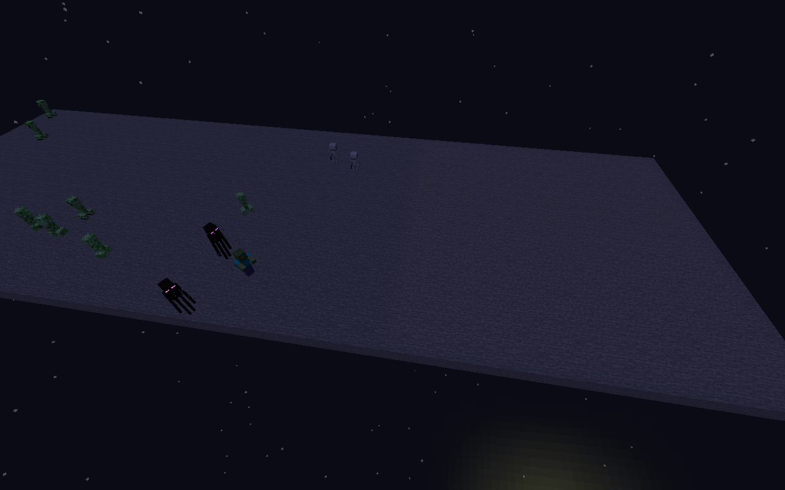
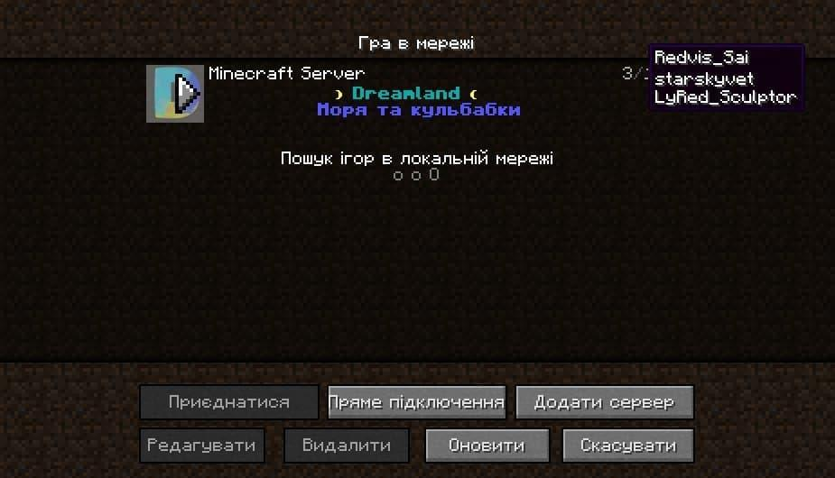

Шведський вісник №14
У фокусі: вихід Minecraft 1.18
Дорогі дрімлендівці!
Редакція "Шведського віснику" урочисто оголошує про повний перехід газети у онлайн-простір задля Вашої ж зручності. Відтепер Ви зможете читати нашу газету у будь-який зручний для Вас час. Аби це відсвяткувати, чотирнадцятий випуск буде цілком і повністю присвячено версії 1.18, що вийшла сьогодні. Приємного читання і приємної гри!
Мишко, головний редактор газети
У номері:
- Minecraft 1.18: що нового
- Нова генерація і все що з нею пов'язане
- Моби
- Блоки і предмети
- Інтерфейс: текстури, налаштування та все, що з тим пов'язане
- Нова музика
- Нові досягнення та як їх здобути
- Технічні зміни: датапаки, карти на проходження, команди
- Інші зміни, які не влізли у жоден з попередніх параграфів
- Чи буде вайп Дрімленду
- Як встановити нову версію
- OptiFine, Paper, Fabric та інші модифікації

Minecraft 1.18 is out: що нового
Нова генерація світу
Не зважаючи на те, що це оновлення називається "Печери і кручі", у цьому оновленні було перероблено усю генерацію світу. Додано купу нових біомів, в основному гірських, перейменовано деякі вже існуючі, зроблено світ у цілому більш живим і цікавим для дослідження. Тепер тут є і підземні озера, у тому числі і з лавою, і гори до 200+ висоти, і ще купа всього цікавого. Нині я не буду розписувати кожне нововведення, що стосується генерації, залишу це вам на дослідження світу.
Підмічу лише кілька основних деталей і опишу нові біоми для гри, деякі з яких були представлені ще у снапшотах 1.17, але потім вирізані з гри на допрацювання:
- Змінено максимальну висоту світу. Тепер вона становить не 255 блоків, як раніше, а 384 блоки.
- З'явилися від'ємні координати по осі Y: висота світу рахується тепер від -64 до 320 блоку.
- Піднято рівень хмар з 128 до 192 висоти, це пов'язано із підвищенням рівня гір.
- Ну добре, трішки про печери, хоча для постійних читачів газети ця інформація аж ніяк не буде новою. З'явилися так звані рудні жили. Це великі скупчення руди в одному місці, які генеруються зрідка під землею. Можуть бути або з міді, або з заліза.
 З міддю генеруються вище 0 висоти, руда перемішана з
З міддю генеруються вище 0 висоти, руда перемішана з  гранітом
гранітом З залізом генеруються нижче 0 висоти, руда перемішана з
З залізом генеруються нижче 0 висоти, руда перемішана з  туфом.
туфом.- Також у жилах зрідка трапляються
 блоки необробленої міді і
блоки необробленої міді і  блоки необробленого заліза відповідно.
блоки необробленого заліза відповідно. - Аметистові жеоди опустили нижче 30 висоти, тепер майже не буде такого, що жеода виходить на поверхню в океані чи на якомусь гірському виступі.
- Додали
 зілля водного дихання у зариті скарби
зілля водного дихання у зариті скарби генерала Авууу, які шукаються за допомогою карт.
карт. - Виправили низку "бородатих" багів у генерації світу, на кшталт генерації піщаних храмів над водою чи блоків води чи піску у повітрі
- Бедрок тепер різний у світах з різним сідом. Так, для тих, хто не знав, у версіях до 1.17.1 включно бедрок у всіх світах, включно з тими які мають різні сіди, генерувався однаково.
- Ну і наостанок: кількість скарбниць збільшилася, особливо на від'ємній висоті.
- Із новим ландшафтом змінилася і генерація руд, зведена діаграма від розробників наведена нижче. На позначку "Not final" вже можете не звертати уваги, адже останній раз генерація руд мінялася аж у снапшоті 21w40a, коли до релізу було ще далеко.

Моби
- Зміни в спавні мобів:
-
 Кози: спавняться тепер високо у горах: на луках і гірських вершинах.
Кози: спавняться тепер високо у горах: на луках і гірських вершинах. -
 Аксолотлі: тепер спавняться тільки у "пишних" печерах у воді поруч із глиною.
Аксолотлі: тепер спавняться тільки у "пишних" печерах у воді поруч із глиною.  Сяючі кальмари: тепер спавняться тільки нижче 30 висоти. У міських річках популяція тварин зменшиться?
Сяючі кальмари: тепер спавняться тільки нижче 30 висоти. У міських річках популяція тварин зменшиться? Риба: тепер спавниться на висоті від 50 до 64, тропічна риба також може спавнитися у "пишних" печерах
Риба: тепер спавниться на висоті від 50 до 64, тропічна риба також може спавнитися у "пишних" печерах- Напевне, найголовніша зміна, яка стосується спавну мобів:  Тепер моби будуть спавнитися тільки за повної відсутності освітлення.
- Розбійники більше не атакують маленьких селян. Продовжуємо кампанію проти насильства, хто підтримує а хто ні - це вже справа кожного.
- Ну і наостанок приємне - тепер можна водити коней і віслюків так само, як і корів з вівцями, тримаючи в руках щось золоте (
 ,
,  або
або  ). Караван лам теж за вами бігтиме, якщо Ви триматимете в руках
). Караван лам теж за вами бігтиме, якщо Ви триматимете в руках  .
.
На зображенні Ви бачите ділянку порожнього світу, права частина якої вкрита  блоками світла із рівнем освітлення, рівним одиниці, а ліва залишена без змін. Як видно, моби спавняться тільки ліворуч.
блоками світла із рівнем освітлення, рівним одиниці, а ліва залишена без змін. Як видно, моби спавняться тільки ліворуч.
Блоки і предмети
- Краплелист тепер можна ставити тільки на
 глину,
глину,  ґрунт,
ґрунт,  блоки трави,
блоки трави,  мох,
мох,  грибницю (міцелій),
грибницю (міцелій),  підзол,
підзол,  кореневий ґрунт і
кореневий ґрунт і  загрубілий ґрунт.
загрубілий ґрунт. - Тепер якщо зрізати будь-яку лозу за кінчик, вона перестане рости. Мова йде про
 печерні лози (які можна отримати шляхом саджання
печерні лози (які можна отримати шляхом саджання  сяючих ягід на стелю), ламінарію,
сяючих ягід на стелю), ламінарію,  кручену і
кручену і  плакучу лозу, які зустрічаються у Незері.
плакучу лозу, які зустрічаються у Незері.
Декорувати з цими лозами стане явно простіше, бо не треба буде перейматися за те що вони можуть вирости... - Збільшили кількість
 шматочків необробленої міді, які випадають з блоків
шматочків необробленої міді, які випадають з блоків 
 мідної руди до 2-5, замість 2-3 у 1.17.
мідної руди до 2-5, замість 2-3 у 1.17.  Морський провідник тепер швидше ламається кайлом (раніше не було різниці, хоч кайлом ти його ламай, хоч мотикою, хоч рукою - швидкість ламання була однаковою.)
Морський провідник тепер швидше ламається кайлом (раніше не було різниці, хоч кайлом ти його ламай, хоч мотикою, хоч рукою - швидкість ламання була однаковою.)
Інтерфейс і текстури
- Додано індикатор автозбереження знизу праворуч екрана, який показується, відповідно, тоді, коли гра зберігає одиночний світ. Може бути вимкнений у налаштуваннях графіки
- Додано нове налаштування графіки "Дистанція симуляції", не плутати з промальовкою чанків. Це налаштування показує, як далеко від гравця гра буде прораховувати ігрові події на кшталт руху мобів чи рідини, вимірюється, так само як і промальовка, у чанках. Зменшення значення відповідно зменшить навантаження на комп'ютер.
Мінімальне значення у ванілі 5, максимальне ж рівне максимальній дальності промальовки, тобто 32 чанки. - У налаштування звуку додали можливість змінити звукововідний пристрій. Припускаю, що це має сенс на комп'ютерах із кількома звуковими картами, я ж при перемиканні із підключеними навушниками ефекту не відчув.
- У налаштування доступності додали можливість прибрати спалахи в небі тоді, коли вдаряє блискавка під час грози. Самі ж блискавки при цьому відображатися не перестануть. Ще один крок назустріч фоточутливим людям.
- У головне меню налаштувань додали налаштування мережевої гри, куди пересунули вимикання сповіщень Realms а також туди ж додали опцію "Відображати у списках серверів". Якщо її вимкнути, то Ви не будете відображатися у списку гравців, які онлайн на сервері (при наведенні на кількість гравцвів онлайн, див. підказку нижче)  При вимкненні вищенаведеної опції Ваш нікнейм зникне із цього списку гравців, коли Ви на сервері.
- Величезна кількість виправлень текстур, серед яких і заміна старих текстур деяких частин блоків на нові із Texture Update, на кшталт низу стола картографа, і прибирання зайвих пікселів із текстури вирощеної моркви, і заміна ніжок табличок в інвентарі на необтесані. Повний перелік тут наводити не буду, бо не бачу в тому сенсу, зміни настільки мінімальні, що напевне будуть майже непомітні у грі, зате перфекціоністи посплять краще зайвих пару ночей.
Музика
- Додано нову платівку "otherside" від Ліни Рейн разом із дев'ятьма іншими композиціями від Ліни Рейн і кумі Таніоки, які грають переважно у нових печерних біомах.
- Платівку "otherside" можна буде знайти у підземних фортецях (ті, у яких портали в Енд), а також рідше у скарбницях зі спавнерами. Повний плейліст з музикою можна послухати у Spotify за посиланням нижче Примітка. Композиція "Ancestry", яка присутня у альбомі на Spotify та інших музичних сервісах, відсутня у файлах гри і поки не використовується.
Досягнення
Додано чотири досягнення:-
У вкладці "Пригоди":
- "Печери та скелі". Для того щоб отримати, впадіть з 320 висоти до -62, не вмерши.
- "Зоряний торговець". Для того щоб отримати, поторгуйтесь з селянином на 320 висоті.
- "Звуки музики". Для того щоб отримати, принесіть програвач на луки, що в горах, і увімкніть там яку-небудь платівку...
- "Як вдома". Для того щоб отримати, проїдьте 50 блоків на Блукачі на лавовому озері у звичайному світі.
У вкладці "Незер":
Технічні зміни: датапаки, карти, сервери
-
Тепер можна налаштовувати спавн мобів у спавнері за допомогою тега CustomSpawnRules (підтримується поки тільки зміна освітлення, за якого працює спавнер). Наприклад:
/give @p spawner{CustomSpawnRules:{BlockLightLimit:15}} // такий спавнер вимкнеться за освітлення 15, тобто працюватиме завжди завжди/give @p spawner{CustomSpawnRules:{BlockLightLimit:5}} // такий спавнер вимкнеться за рівня освітленості 6 і вище/give @p spawner{CustomSpawnRules:{BlockLightLimit:0}} // відповідно, такий спавнер працюватиме тільки за повної відсутності світла.
- Додано частинку block_marker, яка прийшла на заміну частинкам бар'єра і блока світла, і може відображати тепер майже будь-який блок.
- Додали команду /jfr для моніторингу стану гри
- У server.properties додали два налаштування:
simulation-distance: ідентичне клієнтському "Дистанція симуляції", але таке, що працює на сервері і задає максимальну дистанцію симуляції навколо гравця. Щось схоже на подібне налаштування для максимальної промальовки.
hide-online-players: якщо увімкнене, при наведенні на кількість онлайну у списку серверів, ніки гравців будуть прихованими.
Інше
- Minecraft перейшов на Java 17, в результаті чого можуть додатися деякі труднощі у встановленні нової версії, про які нижче.
- Додали мови токі пона і Ломбардську, які, до речі, доступні і в 1.17 і, швидше за все, в 1.16
- Гравці тепер не мають спавнитися у непридатних для того місцях на кшталт води чи над озерами лави.
- Тепер сон у суху погоду не скидає таймер дощу
Чи буде вайп Дрімленду
Тут я можу твердо відповісти. Ні. Вайпу не буде.
Розробники додали технологію змішування чанків, завдяки якій перехід між старими чанками і новими після оновлення до 1.18 майже непомітний, тому вайп дуже і дуже не обов'язковий, можна спокійно продовжити грати у старих світах і на новій версії.
Як встановити 1.18
Точніше як побороти проблему несумісності версій Java на різних лаунчерах. Тут розпишу для різних лаунчерів окремо.
Натисніть на зображення, аби подивитися на нього у повному розмірі.Офіційний лаунчер
Просто виберіть у списку версій "Останній реліз" і натисніть на зелену кнопку "Грати".Лаунчер має сам завантажити свою Java і запустити гру на ній.
Якщо ж Ви бажаєте завантажити свою Java і вказати лаунчеру запускати гру на ній, то раджу вам завантажити її звідси з офіційного сайту для відповідної платформи, після чого розпакуйте її, на другій вкладці натисніть на "Останній реліз", далі у розширених налаштуваннях оберіть шлях до розпакованої Java.
TLauncher
Так само за замовчуванням увімкнено функцію завантаження потрібної версії Java.
Користувацька Java налаштовується так само як і у випадку з ванільним лаунчером - натискаємо поряд з полем вибору Java кнопку Налаштувати..., далі ставимо кнопку згори у положення "Користувацька", і обираємо шлях до Java у себе на комп'ютері. (друге зображення нижче)
MultiMC
Вмикаємо специфічну версію Java у налаштуваннях інсталяції, далі алгоритм аналогічний.
OptiFine, Fabric, Paper та інші приємності від спільноти: коли чекати
Оптифайну вже не треба чекати, бета версія OptiFine для 1.18 вже доступна на офіційному сайті optifine.net, OptiFabric теж доступний у тестовому режимі для 1.18 на офіційній сторінці моду на CurseForge, те ж можна сказати, відповідно, і про фабрик.
Paper із плагінами поки недоступні для 1.18, сподіваюся, що ми не будем грати пів року на ванільному ядрі, та нічого не віщує такого сумного сценарію.